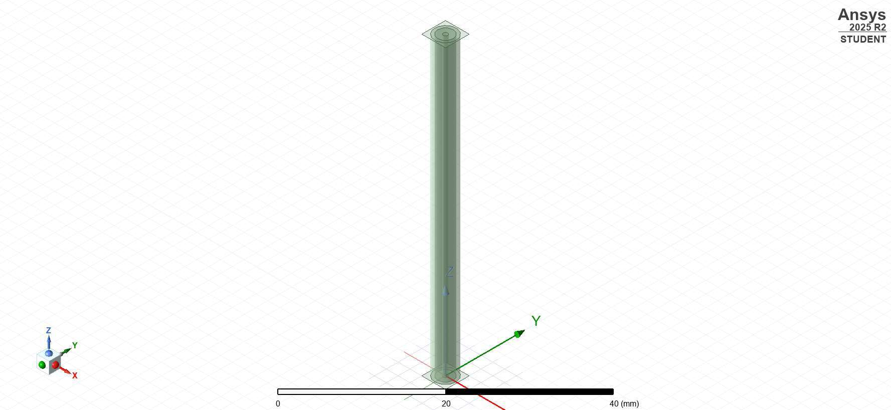
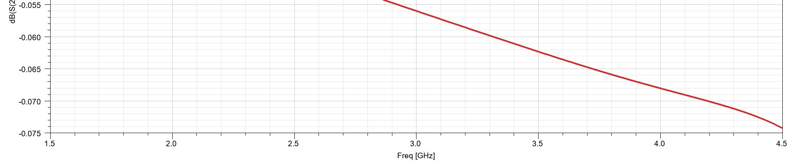
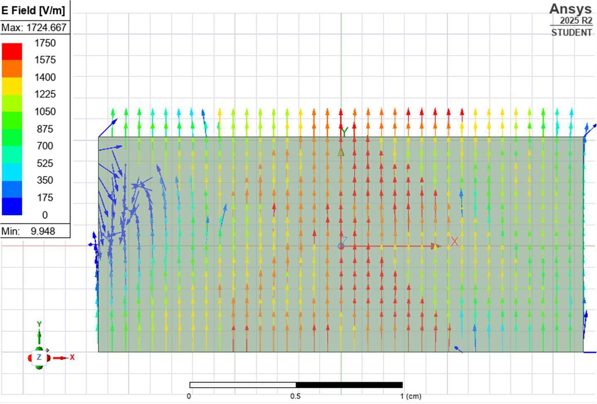
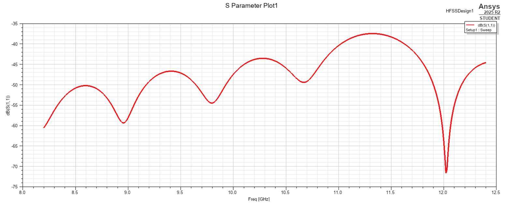
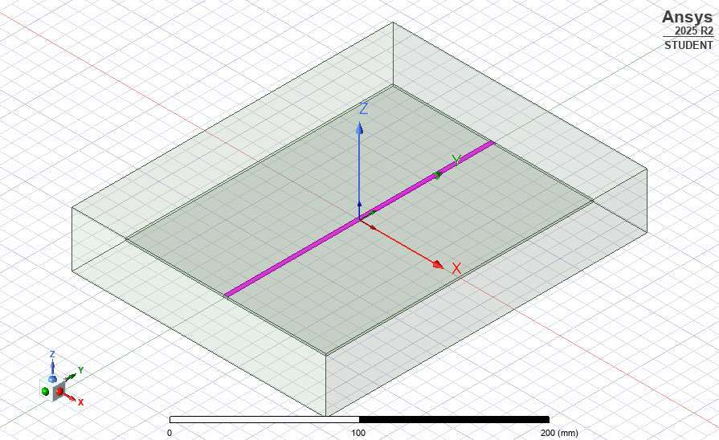
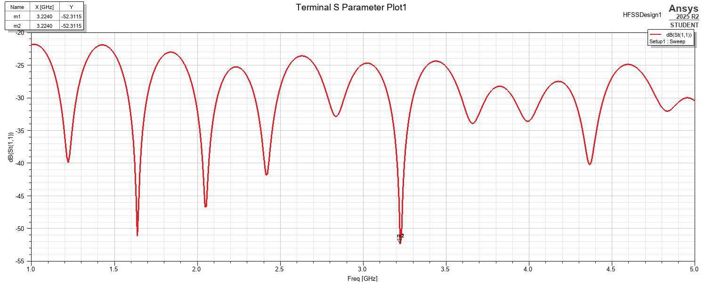
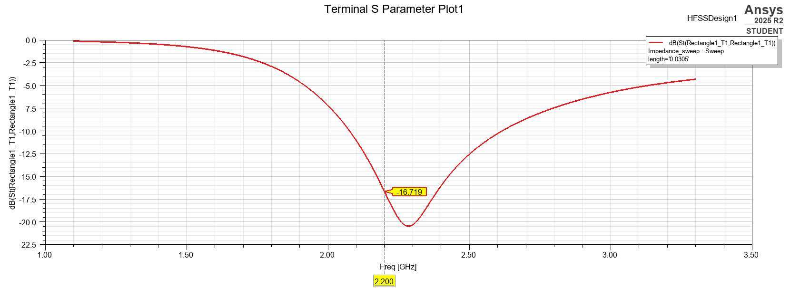
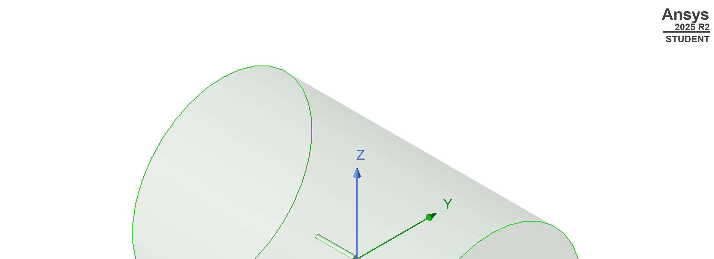
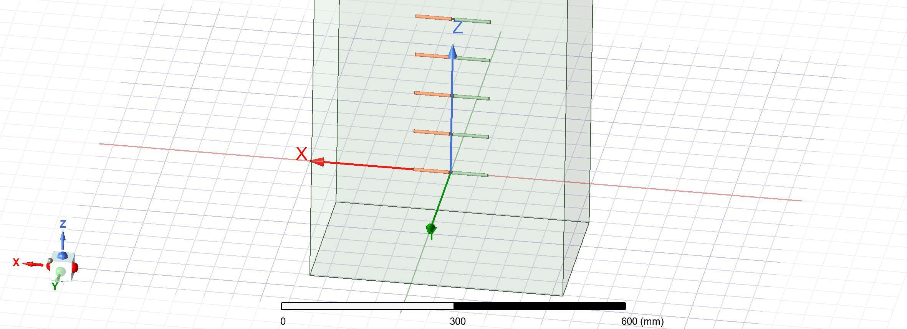

Overview
A five-lab sequence in Microwaves and Antennas progressing from guided-wave fundamentals through impedance matching to antenna design and array synthesis. All simulations were performed in Ansys HFSS 2025 R2 (3-D full-wave electromagnetic solver), with results validated against analytical predictions derived from transmission line theory, waveguide theory, and antenna array factor analysis.
Lab 1 — Coaxial Cable
Designed and simulated a 50-Ω coaxial transmission line with a polyethylene dielectric (εr = 2.2), copper inner conductor (radius 0.375 mm), and copper outer conductor (radius 1.31 mm). The 5 cm section was analyzed using four different port/solver combinations to compare their behavior:
- Driven Modal + Wave Port — S(1,1) remained below −65 dB across the 1.5–4.5 GHz sweep, confirming negligible reflection with matched terminations.
- Driven Modal + Lumped Port — insertion loss identical; subtle difference in S(1,1) shape due to port calibration differences.
- Driven Terminal + Wave Port / Lumped Port — verified that Modal and Terminal solvers converge to the same result for the TEM-mode coax.
The simulated characteristic impedance closely matched the designed 50 Ω target. The S(2,1) plot showed a negative slope indicating frequency-dependent resistive loss in the copper conductors.


Lab 2 — Rectangular Waveguide
Modeled an X-band rectangular waveguide (2.286 cm × 1.016 cm) operating in the 8.2–12.4 GHz band. The dominant TE10 mode cutoff frequency, guided wavelength, and wave impedance were calculated analytically and compared against HFSS simulation results.
- Dominant mode propagation: S(1,1) remained below −35 dB and S(2,1) at approximately 0 dB across the operating band, confirming matched, lossless propagation.
- E-field visualization: The simulated E-field of the dominant mode showed maximum field strength at a/2 (center of the broad wall) with zero field at the conducting boundaries, matching TE10 theory.
- Port renormalization: When Port 1 was renormalized to 50 Ω (mismatched to the waveguide impedance), significant reflection appeared as expected, demonstrating impedance mismatch effects.
- Higher-order mode analysis: Adding a second wave mode (TE20) confirmed it was cutoff across the entire X-band, validating single-mode operation.
- Attenuator section: A half-width (a/2) waveguide section was shown to provide strong attenuation of the TE10 mode, since halving the broad dimension pushes the cutoff above the operating band.


Lab 3 — Microstrip Stub Tuning
Designed shunt open-circuited single and double-stub impedance matching networks on a 50-Ω microstrip line. The microstrip was fabricated on FR4 epoxy substrate (εr = 4.4, thickness 1.6 mm) with a trace width of 3.1 mm, yielding a guided wavelength of 54.8 mm at the 3 GHz design frequency.
- Baseline microstrip: A bare 50-Ω line terminated in 200 Ω produced 4.437 dB return loss (significant mismatch), establishing the need for matching.
- Single-stub matching: A shunt open stub was placed at the analytically determined distance from the load. The S(1,1) plot showed a deep null at the design frequency, confirming impedance match. Periodic nulls appeared at harmonics due to the distributed nature of the stub.
- Double-stub matching: Two stubs provided broader bandwidth matching with deeper return loss, at the cost of more complex layout.
- Smith chart analysis: Pre-lab calculations used Smith chart graphical methods to determine stub lengths and positions, then verified against closed-form MATLAB solutions.


Lab 4 — Quarter-Wave Monopole Antenna
Designed and analyzed a linear quarter-wave monopole antenna operating at 2.2 GHz. The system was studied in two configurations: over an infinite ground plane and over a finite ground plane (λ/2 radius), with a coaxial quarter-wave transformer for impedance matching.
- Infinite ground plane: The initial quarter-wave monopole had an input impedance of 60.32 + j27.72 Ω (higher than the theoretical 36.5 + j21.5 Ω due to realistic copper conductors). The antenna was shortened to 30.5 cm to achieve resonance, reducing the reactive component to near zero.
- Return loss: At resonance, the simulated return loss was −16.719 dB, closely matching hand calculations and confirming acceptable matching to the 50-Ω feed.
- Radiation pattern: The 3-D directivity plot showed a maximum of 5.06 dB at θ = 90° (broadside), matching the expected hemisphere pattern for a monopole over a ground plane. The slightly reduced directivity compared to the ideal 5.17 dB is attributed to the shortened antenna length.
- Finite ground plane effects: Replacing the infinite ground with a finite copper disc caused back-radiation and pattern distortion, reducing front-to-back ratio and shifting the impedance.
- Quarter-wave transformer: A coaxial transformer section was designed to match the antenna impedance to 50 Ω, improving the return loss to better than −20 dB at the design frequency.


Lab 5 — Linear Antenna Arrays
Designed and compared three types of 10-element linear antenna arrays at 1 GHz with λ/4 element spacing, starting from a resonant half-wave dipole reference element:
- Reference dipole: A single resonant half-wave dipole was tuned to 66 mm length, yielding an input impedance of 71.36 − j0.07 Ω at 1 GHz (near-ideal resonance with minimal reactance). This served as the array element.
- Ordinary end-fire array: Uniform amplitude excitation with progressive phase shift to steer the main beam along the positive z-axis. Theoretical directivity and half-power beamwidth (HPBW) were computed from array factor theory.
- Hansen–Woodyard end-fire array: Modified phasing following the Hansen–Woodyard condition to increase end-fire directivity beyond the ordinary case, at the cost of slightly elevated sidelobes.
- Dolph–Chebyshev broadside array: Non-uniform amplitude excitation designed for a specified sidelobe level of −35 dB. The Chebyshev amplitude taper provides the narrowest possible main beam for the given sidelobe constraint.
Each array configuration was exported as a custom HFSS array definition file and simulated to compare directivity, HPBW, and sidelobe level (SLL) against analytical predictions.

